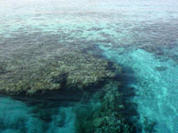

Vacation at Red Sea
The photos were taken at Sharm El Sheikh since 2004 near resorts Conrad, Concord, Lavita and in excursions at Sinai.
A squba wasn't used underwater, only a diving mask. Firstly
I used old-fashion film cameras. Those photos aren't interesting.
Now I prefer small digital pocket-size cameras. The photos shown
are made by
-
Nikon cp880 with
Ewa-Marine
underwater
soft box
-
Fuji f30, f31 with underwater hard box
-
Canon d10 - allweather underwater camera
-
Nikon cp4500, p6000 - overwater only

Normal sea. Only
Red Sea is clear
")
 resort is quite calm and picturesque place")
The
underwater
views
even more picturesque

Coral reef
is
dangerous for ships

The Egyptians use
"arabic numerals"

Reef heron
hunts
on small fish


Corals


Corals in million year
mountains

Fire coral - the burn
remains many days

Over the coral oasis
you see "blue sky"
Red Sea Fish

Arabian angelfish
mainly swims alone


Freckled hawkfish
sits on a top of a coral


Coral worms
Christmas tree worm. Normally you see two color spiral tentacles and a cap of its house-tube. The tube is embedded into coral.